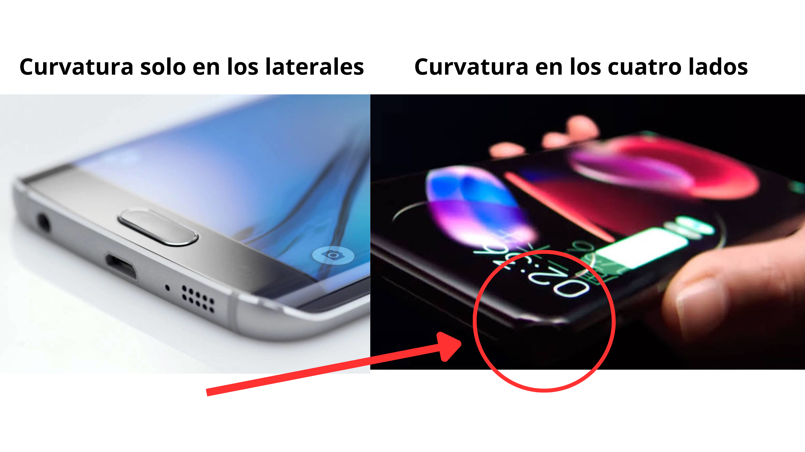

Sin embargo, no todos los teléfonos curvos son compatibles con este tipo de mica.
Existen dos tipos de pantallas curvas:
- Curvatura solo en los laterales (arriba y abajo planos).
En estos equipos, la mica UV suele quedar muy bien.
- Curvatura en los cuatro lados (laterales, parte superior e inferior).
Aquí aparece un problema: en las esquinas se genera un levantamiento o burbuja que impide que el hidrogel UV se adhiera, por más que se intente.

✅ ¿Cuál es la solución?
Revisar en la máquina de hidrogel si existe el corte “mariposa” (generalmente aparece como UV-1).
Si el corte mariposa no funciona o no está disponible:
La mejor alternativa es usar Protection Pro, ya que se adapta mejor a pantallas curvas en cuatro lados.
En caso de no tenerlo, se puede usar hidrogel transparente (es más flexible y se adapta mejor que otros tipos de hidrogel).
📌 En resumen:
- Si el equipo solo es curvo en los laterales → mica UV funciona bien.
- Si es curvo en los cuatro lados → usar corte mariposa (si aplica), y si no, mejor usar Protection Pro o hidrogel transparente.